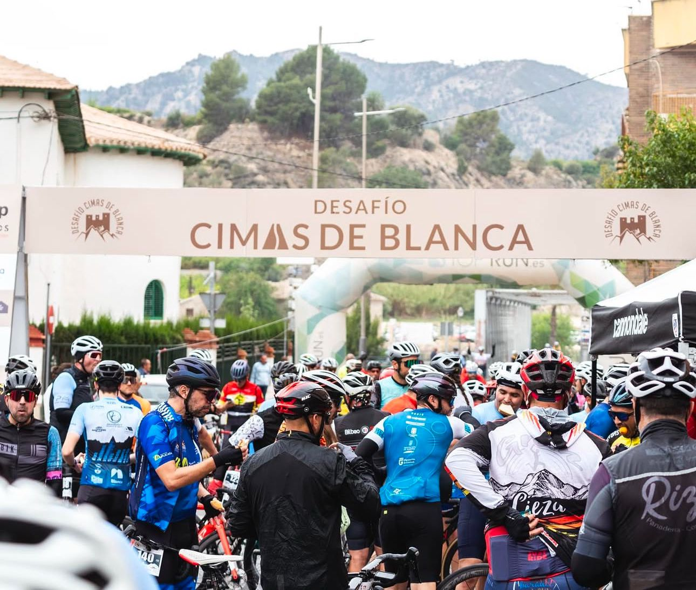

Marcha cicloturista Desafío Cimas de Blanca
Desafío Cimas de Blanca
Pedalea, corre y vuela en el Corazón del Valle

CIMAS DE BLANCA
DONDE EL CAMINO SE HACE RETO
El Desafío Cimas de Blanca nace de la ilusión de unos jóvenes deportistas cansados de recorrer el país de prueba en prueba, viendo cómo un lugar tan maravilloso como el suyo, Blanca, no albergaba una prueba deportiva de tal calibre. Blanca está situada en el corazón del Valle De Ricote, en la provincia de Murcia. Su ubicación geográfica coincide con el curso del río Segura, a cuyo margen izquierdo se encuentra este pequeño pueblo de unos 6,500habitantes.
¿QUÉ ES “DESAFÍO CIMAS DE BLANCA”?
Desafío Cimas de Blanca es un circuito de Carreras compuesto por:
Desafío Cimas de Blanca Trail
10K San Pedro
Contacta con nosotros en
Carlos Turpín
Presidente de la prueba
615 01 09 04
Pablo Nuñez
Coordinador de la prueba
652 15 13 18
Víctor Cano
665 12 08 15
Dudas sobre la marcha e inscripciones:
cimasdeblanca@gmail.com
Colaboradores
y temas comerciales: cimasdeblanca@gmail.com